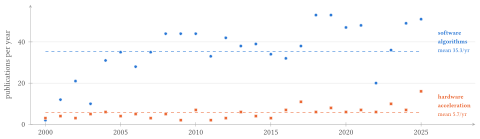
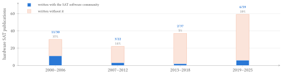
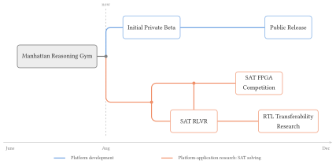
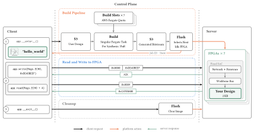
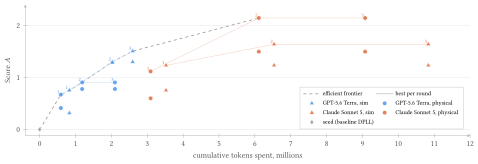

1Introduction
In their Turing lecture in 2018, John Hennessy and David Patterson talked of a new Golden Age of computer architecture[12]. An age marked by the end of Dennard scaling and Moore’s law, and the rise of domain-specific architectures (DSAs). They named four criteria for this new age: (1) hardware/software co-design for high-level and domain-specific languages, (2) enhanced security, (3) free and open architectures, and (4) agile chip development where hardware design becomes more like software design.
DSAs are specialized computer architectures designed to accelerate workloads in a given application domain, contrasting general-purpose architectures such as CPUs[11, p. 540]. DSAs have found use in a variety of domains, including deep learning (TPUs)[16], datacenter acceleration (Catapult)[26], and molecular dynamics (Anton 3)[30], to name a few.
A common method for prototyping and exploring novel DSAs is the use of field-programmable gate arrays (FPGAs), which allow candidate designs to be evaluated on real hardware before committing to silicon[17], [3]. Beyond prototyping, FPGAs have shown promise in accelerating a variety of domain-specific workloads, including molecular dynamics[36], high-frequency trading[18], genomics[27], boolean satisfiability[21], astronomy[22], economics[8], and even music[35].
Despite the promise of FPGAs in accelerating DSA research, there are significant barriers to entry for the greater research community. FPGAs are difficult to program, requiring expertise in hardware description languages (HDLs) such as Verilog or VHDL, creating a steep learning curve for software programmers. While high-level synthesis (HLS) tools have been developed to allow programming FPGAs in higher-level languages such as C/C++, it is still often difficult for general software designers with limited hardware experience: a naive HLS C implementation of a CNN yields an accelerator 80× slower than a single-threaded CPU, while an expert-tuned version of the same kernel achieves a roughly 7,041× speedup[32].
While there are consumer-grade FPGA development boards under $200, the steep learning curve and a comparatively small tooling and library ecosystem often position GPUs as the preferred platform for researchers[34]. AWS F2 instances provide access to high-end FPGAs in the cloud, but are subject to a gap in domain-expert knowledge and cloud-systems expertise, which can make it difficult to get started[8], [19].
We propose a serverless programming model for FPGAs that allows domain-experts to access FPGAs in the cloud, with a focus on tighter integration of coding agents and large language models (LLMs) into the development process. Our approach aims to allow domain-experts with limited hardware background to explore novel DSAs on FPGAs.
2Motivation
Manhattan Reasoning is motivated from our own experience as domain-experts in formal methods and automated reasoning. Boolean satisfiability (SAT) was the first problem shown to be NP-complete[10], and modern solvers now underpin work across formal verification[5], artificial intelligence[7, Ch. 19], circuit design[7, Ch. 27], and automated theorem proving[7, Ch. 33].

click to enlargeThe varying range of practical applications of SAT has led to research in accelerating SAT solving via DSAs as to parallelize the workload and improve performance relative to general-purpose CPUs, dating back to 1998[31], [37]. However, there has been limited progress in adopting SAT hardware accelerators due to the difficulty of implementing the dynamic data structures needed to support modern SAT solving algorithms[21]. Despite this difficulty, recent publications have shown promise in stand-alone hardware accelerators with SAT-Accel achieving 2.8× speedup over previous state of the art CPU-based solver Kissat and VeriSAT achieving up to a 17.94× speedup over SAT-Accel[21], [33].

click to enlargeWith recent advancements in hardware acceleration for SAT solving, we hypothesize that the gap between research exploration in software SAT algorithms and hardware acceleration shown in Figure 1 is not solely due to the difficulty of implementing SAT solvers in hardware, but also the lack of accessible tools and platforms for domain-experts to explore hardware acceleration. Figure 2 groups these hardware publications into four eras and marks those co-authored by an established software SAT researcher. The hardware literature roughly doubled over this period, while the share written with the software community fell from 37% to 10%. Hardware SAT research is growing without the software community. This lack of collaboration can be further seen in the lack of a hardware track in the SAT competition, despite the fact that the SAT competition has been running since 2002 and has a dedicated track for parallel SAT solvers[28].
3Research Vision
We aim to lower the barrier to entry to DSA research for domain-experts by providing a cloud programming platform for FPGAs. Our platform is denoted by:
- A serverless programming model for FPGAs: We provide a serverless programming model in Python for FPGAs that allows domain-experts to access FPGAs in the cloud without needing to manage the underlying cloud infrastructure.
- Coding Agent Integration: We build our platform on FPGAs supported by open-source toolchains such as nextpnr[29], which impose no licence-seat limit on the parallel, high-volume compilation that agentic iteration requires.
We plan to illustrate the utility of our platform through a case study on SAT solving, which is within our own domain. In particular, we will explore the following:
- SAT FPGA Competition: We will organize a competition inspired by the SAT Competition[28], focusing solely on an AI-generated track to capitalize on the benefits of coding agents for assisting domain-experts unfamiliar with RTL.
- Fine-tuning an Open Source Model: We will fine-tune an open-source model on RLVR SAT tasks as our own entry into the competition.
- Transferability Research: We will investigate the transferability of our model on RTL benchmarks such as CVDP[25].
We will also explore the potential for physical FPGA feedback in the loop for training on real clock speeds.

click to enlargeFigure 3 conveys our research vision, which is organized into two core threads: (1) continued development of our platform and (2) exploration of the utility of our platform through applications in SAT solving.
3.1 Platform Development
3.1.1 Current State of the Platform
The current platform is in the early stages of development, and is characterized by a serverless programming model in Python, which allows domain-experts to access FPGAs in the cloud without needing to manage the underlying cloud infrastructure, including the provisioning, flashing, and clean-up of an FPGA[15, p. 6]. We utilize memory-mapped I/O[4, p. 664] in a remote setting: users read and write to the FPGA’s memory from their Python programs as if it were local memory. Extending a peripheral interface across machines in this way is established practice seen in USB and PCIe, allowing devices to be used “as if they were locally attached”[13], [23]. We attribute high emphasis to the concept of transparency defined by Nelson in his 1981 dissertation. Nelson defines transparency over programming language mechanisms in general, naming remote procedure call (RPC) as one instance of it:
Two programming language mechanisms are transparent if they have identical syntax and semantics. In particular, a transparent language-level RPC mechanism is one in which local procedures and remote procedures are (effectively) indistinguishable to the programmer.
Bruce Jay Nelson, Remote Procedure Call, 1981, p. 6
We employ transparency in our goal to make FPGA programming accessible to domain-experts.
Figure 4 shows a simple example of a user instantiating an Amaranth HDL module described in Figure 8 on an FPGA and interacting with it through a python program. The user does not need to physically manage the FPGA, nor do they need to write any device drivers or firmware to interact with the FPGA. Figure 5 illustrates how the program seen in Figure 4 abstracts the complexity of interacting with the FPGA over the network. The platform currently consists of 7 Lattice ECP5 FPGAs hosted on a local subnet and currently only supports single tenet usage.
import manhattan_reasoning_gym as mrg
class Regs(mrg.cloud.RegisterMap):
ECHO = 0x0000
app = mrg.cloud.App(
"hello_world",
design="examples/hello_world_rtl.py",
registers=Regs,
)
@app.local_entrypoint()
def main():
with app:
pattern = [0xDEADBEEF, 0xCAFEBABE, 0x12345678, 0xABCDEF01]
print("writing pattern ...")
for i, word in enumerate(pattern):
app.write(Regs.ECHO + i * 4, word)
print("reading back ...")
for i, expected in enumerate(pattern):
res = app.read(Regs.ECHO + i * 4)
print(f" [{i}] {res:#010x}")hello_world, which writes four words to an echo RAM on the FPGA and reads them back.
click to enlargewrite and read then crosses the control plane as one Wishbone transaction — an address and a data word out, an acknowledgement or a data word back — reaching the user’s 2 KB region and nothing else on the SoC. ③ Leaving the context flashes a clear image, which is what wipes the design before the board is handed to the next session. Two elisions for legibility: the figure shows one write and one read where the program loops four times, and the design is built and flashed on first use rather than at __enter__ itself.3.1.2 Platform Beta and Public Release
We plan to release a private beta of our platform in the coming weeks, with a public beta release planned for December. The private beta will be limited to a small, but incrementally increasing, group of users who will be able to access the platform and provide feedback on usability and performance. In order to facilitate the private beta, we will examine payment platforms and a user database to manage access to the platform prior to the private beta release. We plan to supply usage credits free of charge to beta testers. Through the beta, we will conduct user studies on the accessibility of the platform for domain-experts with limited hardware experience in comparison to F2 instances, HLS, and other traditional development approaches. We expect to continually maintain the platform and add new features as betas are conducted and feedback is received from the community.
As we conduct our user studies, the following research questions will be explored:
- Accessibility. Does the platform provide a more accessible development experience for domain-experts compared to traditional FPGA development approaches (Existing Cloud Compute Options (F2), HLS vs RTL w/ Agentic Approaches)?
- Performance. Does the platform provide a comparable time from a design change to results on real hardware for domain-experts compared to traditional FPGA development approaches?
- AI Integration. Does the platform provide sufficient tooling to support efficient agentic development for FPGAs?
We plan to release the platform publicly in December, with the goal of being in a stable state such that a group of users can concurrently access the infrastructure without slowdowns or failures while having sufficient tooling to support their development needs.
3.1.3 Future Platform Development
While Lattice ECP5 FPGAs remain the primary target for our platform for the coming months due to its support for open-source toolchains that benefit agentic development, we recognize that real acceleration-workloads require larger industry-grade FPGAs with more resources. We plan to explore AWS F2 instances as an optional backend for our platform which would allow users to switch between ECP5s for exploratory development and F2 instances for production workloads while maintaining the same level of accessibility.
3.2 Application Exploration
3.2.1 SAT FPGA Competition
The International SAT Competition[14] has been accelerating research in SAT solving for over 20 years with solvers increasingly becoming more powerful and efficient. Figure 6 shows this upward progress across three decades of historical solvers preserved and re-run by the SAT Museum[6]. More recent solvers are able to solve more problems within the same time limit compared to older ones.
 click to enlarge
click to enlarge
In the recent years, there is growing interest in promoting agentic development through competitions. The 2026 SAT Competition included sub-tracks for AI-generated and/or AI-tuned solvers within each of its Main, Experimental, Parallel, and Cloud tracks[28]. The 36th International Conference on Field-Programmable Logic and Applications (FPL) will feature an FPGA Optimization Contest sponsored by AMD where agents will optimize maximum clock frequency (Fmax) for existing placed-and-routed designs[2].
Despite these advancements, the SAT Competition has yet to include a hardware track. We will explore the potential for a SAT competition focused on hardware accelerated solvers, with a particular focus on an AI-generated track to capitalize on the benefits of coding agents for assisting domain-experts unfamiliar with RTL.

click to enlargeAs a proof of concept, we evaluated current LLM capabilities in optimizing SAT solvers for FPGAs. We prompted frontier LLMs under a bare-bones agentic harness to optimize a baseline DPLL solver for latency and resource utilization, allowing some of the models to experiment with different clock speeds on physical hardware during the agentic loop. Figure 7 conveys the results. We found that while frontier models were able to conduct basic optimizations, neither moved beyond the seed’s DPLL to established algorithmic advances such as clause learning or watched literals. We plan to go beyond AI-optimization, and explore the potential for an AI-generated track where agents can explore entirely new algorithmic approaches for SAT solvers on FPGAs.
In the following months, we plan to create a competition benchmark and proposal paper for a SAT FPGA competition. We will enter our own entry as a proof of concept for the competition. We will explore the following research questions:
- Benchmarks. What are the appropriate benchmarks for a SAT FPGA competition? Existing SAT Competition Benchmarks yield a wide range of meaningful problems, however, FPGAs are bounded by their on-chip memory, limiting the size of problems that can be solved.
- Scoring. What is the appropriate scoring metric for a SAT FPGA competition? Should token-spend be considered in the scoring metric to incentivize efficient agentic development?
- Entry Constraints. What kind of entries are allowed? Must they be AI-generated, AI-tuned, or both? May they use physical FPGA feedback in the loop? Are hand-written elements permitted? And may they start from an existing SAT solver, or must they be entirely new designs? How do we govern agentic harnesses versus post-training methods? Is the solver the entry or the agent/model?
3.2.2 Fine-tuning an Open Source Model
To further motivate our competition, we plan to fine-tune an open-source model as our own entry. Past work such as ChipSeek has shown promise in reinforcement learning for power, area, and performance (PPA) in RTL tasks[9]. SAT has specifically demonstrated the potential for reinforcement learning with verifiable rewards (RLVR). SATURN illustrates the use of 3-SAT for improving reasoning in LLMs due to its scalability, verifiability, and controllable difficulty[20]. However, the shift from textual reasoning to generalizable RTL opens questions for whether or not SAT is a suitable task for RLVR in RTL-focused LLMs.
Through the following months, we plan to evaluate the following research questions:
- SAT Instances. Does SATURN’s 3-SAT provide a suitable task for RLVR in RTL-focused LLMs? Or do we necessitate a more generalizable SAT task?
- Physical Feedback. Does physical FPGA feedback in the loop improve the performance of RLVR in RTL-focused LLMs? We plan to only explore clock-speed as a physical feedback metric for our reinforcement learning.
- Transferability. Does fine-tuning on SAT tasks transfer beyond our competition to other PPA RTL benchmarks such as CVDP[25] or Pluto[1]?
4Conclusion
Despite the promise of DSAs, domain-experts remain shut out of FPGA acceleration by the steep learning curve of hardware design. We built a platform that aims to remove those barriers through serverless Python access and open toolchains that support agentic iteration, letting domain-experts explore DSA applications without acquiring an FPGA, software licenses, or hardware expertise.
We found that frontier models could design working RTL on our platform but stopped short of algorithmic advances in SAT solving, leaving a gap that a competition is well suited to close. We propose such a competition, centered on an AI-generated track for hardware accelerated solvers, and will demonstrate its feasibility with our own entry: an open-source model post-trained on SAT instances, which we hypothesize will transfer to broader RTL benchmarks. The competition is bounded by the SAT instances that fit within FPGA on-chip memory.
We will open public beta access in December 2026, with the competition benchmark and proposal to follow. Our aim is the agile hardware development Hennessy and Patterson name as a condition of their new Golden Age: hardware design that works like software design[12].
AThe EchoPeripheral User Design
from amaranth.hdl import Elaboratable, Module, Signal
from amaranth.lib.memory import Memory
# 512 words x 4 bytes = 2048 bytes: exactly the user design region.
DEPTH = 512
class EchoPeripheral(Elaboratable):
def __init__(self, depth=DEPTH):
self.depth = depth
# (depth - 1).bit_length() = 9 for depth=512.
addr_bits = (depth - 1).bit_length()
# Wishbone inputs (driven by the bus master / firmware).
self.wb_cyc = Signal()
self.wb_stb = Signal()
self.wb_we = Signal()
self.wb_adr = Signal(addr_bits)
self.wb_dat_w = Signal(32)
self.wb_sel = Signal(4)
# Wishbone outputs (driven by this peripheral).
self.wb_dat_r = Signal(32)
self.wb_ack = Signal()
def elaborate(self, platform):
m = Module()
# Memory without init so synthesis infers block RAM on ECP5.
m.submodules.mem = mem = Memory(shape=32, depth=self.depth, init=[])
rd = mem.read_port(domain="sync", transparent_for=[])
wr = mem.write_port(domain="sync")
m.d.comb += [
rd.addr.eq(self.wb_adr),
wr.addr.eq(self.wb_adr),
wr.data.eq(self.wb_dat_w),
self.wb_dat_r.eq(rd.data),
]
# Write enable fires the cycle stb arrives; the write completes
# on the next clock edge, the same edge ack fires.
m.d.comb += wr.en.eq(
self.wb_cyc & self.wb_stb & self.wb_we & ~self.wb_ack
)
# Ack: assert one cycle after cyc+stb, then clear.
with m.If(self.wb_cyc & self.wb_stb & ~self.wb_ack):
m.d.sync += self.wb_ack.eq(1)
with m.Else():
m.d.sync += self.wb_ack.eq(0)
return mReferences
- Manar Abdelatty, Maryam Nouh, Jacob K. Rosenstein, and Sherief Reda. 2025. Pluto: A Benchmark for Evaluating Efficiency of LLM-generated Hardware Code. arXiv. 10.48550/arXiv.2510.14756
- Advanced Micro Devices, Inc. 2026. Agentic FPGA Backend Optimization Competition @ FPL’26. https://xilinx.github.io/fpl26_optimization_contest/index.html.
- Alon Amid et al. 2020. Chipyard: Integrated Design, Simulation, and Implementation Framework for Custom SoCs. IEEE Micro 40(4), 10–21. 10.1109/MM.2020.2996616
- Gordon Bell et al. 1970. A New Architecture for Mini-Computers—The DEC PDP-11. Proceedings of the May 5–7, 1970, Spring Joint Computer Conference (AFIPS ’70), 657–675. 10.1145/1476936.1477037
- Armin Biere, Alessandro Cimatti, Edmund M. Clarke, and Yunshan Zhu. 1999. Symbolic Model Checking without BDDs. Tools and Algorithms for the Construction and Analysis of Systems (TACAS), 193–207. 10.1007/3-540-49059-0_14
- Armin Biere, Mathias Fleury, Nils Froleyks, and Marijn J. H. Heule. 2023. The SAT Museum. Proceedings of the 14th International Workshop on Pragmatics of SAT (POS’23) 3545, 72–87. https://ceur-ws.org/Vol-3545/paper6.pdf
- Armin Biere, Marijn J. H. Heule, Hans van Maaren, and Toby Walsh. 2021. Handbook of Satisfiability. IOS Press 336. 10.3233/faia336
- Bhagath Cheela, André DeHon, Jesús Fernández-Villaverde, and Alessandro Peri. 2025. Programming FPGAs for Economics: An Introduction to Electrical Engineering Economics. Quantitative Economics 16(1), 49–87. 10.3982/QE2344
- Zhirong Chen et al. 2026. ChipSeek: Optimizing Verilog Generation via EDA-Integrated Reinforcement Learning. arXiv. 10.48550/arXiv.2507.04736
- Stephen A. Cook. 1971. The Complexity of Theorem-Proving Procedures. Proceedings of the Third Annual ACM Symposium on Theory of Computing (STOC), 151–158. 10.1145/800157.805047
- John L. Hennessy and David A. Patterson. 2019. Computer Architecture: A Quantitative Approach. Morgan Kaufmann.
- John L. Hennessy and David A. Patterson. 2019. A New Golden Age for Computer Architecture. Communications of the ACM 62(2), 48–60. 10.1145/3282307
- Takahiro Hirofuchi, Eiji Kawai, Kazutoshi Fujikawa, and Hideki Sunahara. 2005. USB/IP: A Peripheral Bus Extension for Device Sharing over IP Network. Proceedings of the 2005 USENIX Annual Technical Conference, FREENIX Track, 47–60. https://www.usenix.org/legacy/event/usenix05/tech/freenix/hirofuchi/hirofuchi.pdf
- Matti Järvisalo, Daniel Le Berre, Olivier Roussel, and Laurent Simon. 2012. The International SAT Solver Competitions. AI Magazine 33(1), 89–94. 10.1609/aimag.v33i1.2395
- Eric Jonas et al. 2019. Cloud Programming Simplified: A Berkeley View on Serverless Computing. EECS Department, University of California, Berkeley (UCB/EECS-2019-3). https://arxiv.org/abs/1902.03383
- Norman P. Jouppi et al. 2017. In-Datacenter Performance Analysis of a Tensor Processing Unit. Proceedings of the 44th Annual International Symposium on Computer Architecture (ISCA), 1–12. 10.1145/3079856.3080246
- Sagar Karandikar et al. 2018. FireSim: FPGA-Accelerated Cycle-Exact Scale-Out System Simulation in the Public Cloud. Proceedings of the 45th Annual International Symposium on Computer Architecture (ISCA), 29–42. 10.1109/ISCA.2018.00014
- Christian Leber, Benjamin Geib, and Heiner Litz. 2011. High Frequency Trading Acceleration Using FPGAs. Proceedings of the 21st International Conference on Field Programmable Logic and Applications (FPL), 317–322. 10.1109/FPL.2011.64
- Bowen Li et al. 2026. The Missing Adapter Layer for Research Computing. arXiv. 10.48550/arXiv.2603.23942
- Huanyu Liu et al. 2025. SATURN: SAT-based Reinforcement Learning to Unleash LLMs Reasoning. arXiv. 10.48550/arXiv.2505.16368
- Michael Lo, Mau-Chung Frank Chang, and Jason Cong. 2025. SAT-Accel: A Modern SAT Solver on a FPGA. Proceedings of the 2025 ACM/SIGDA International Symposium on Field Programmable Gate Arrays (FPGA), 234–246. 10.1145/3706628.3708869
- F. Marini et al. 2026. FPGA-Based RoCEv2-RDMA Readout Electronics for the CTAO-LST Advanced Camera. IEEE Transactions on Nuclear Science 73(2), 448–459. 10.1109/TNS.2025.3599615
- Jonas Markussen et al. 2021. SmartIO: Zero-overhead Device Sharing through PCIe Networking. ACM Transactions on Computer Systems 38(1-2). 10.1145/3462545
- Bruce Jay Nelson. 1981. Remote Procedure Call. Carnegie-Mellon University. https://bitsavers.org/pdf/xerox/parc/techReports/CSL-81-9_Remote_Procedure_Call.pdf
- Nathaniel Pinckney et al. 2025. Comprehensive Verilog Design Problems: A Next-Generation Benchmark Dataset for Evaluating Large Language Models and Agents on RTL Design and Verification. arXiv. 10.48550/arXiv.2506.14074
- Andrew Putnam et al. 2016. A Reconfigurable Fabric for Accelerating Large-Scale Datacenter Services. Communications of the ACM 59(11), 114–122. 10.1145/2996868
- Sahand Salamat and Tajana Rosing. 2020. FPGA Acceleration of Sequence Alignment: A Survey. arXiv. 10.48550/arXiv.2002.02394
- SAT Competition 2026 Organizers. 2026. SAT Competition 2026: Tracks. Satellite event of the SAT Conference 2026. https://satcompetition.github.io/2026/tracks.html
- David Shah et al. 2019. Yosys+nextpnr: An Open Source Framework from Verilog to Bitstream for Commercial FPGAs. Proceedings of the IEEE 27th Annual International Symposium on Field-Programmable Custom Computing Machines (FCCM), 1–4. 10.1109/FCCM.2019.00010
- David E. Shaw et al. 2021. Anton 3: Twenty Microseconds of Molecular Dynamics Simulation Before Lunch. Proceedings of the International Conference for High Performance Computing, Networking, Storage and Analysis (SC), 1–11. 10.1145/3458817.3487397
- Iouliia Skliarova and António de Brito Ferrari. 2004. Reconfigurable Hardware SAT Solvers: A Survey of Systems. IEEE Transactions on Computers 53(11), 1449–1461. 10.1109/TC.2004.102
- Atefeh Sohrabizadeh, Cody Hao Yu, Min Gao, and Jason Cong. 2022. AutoDSE: Enabling Software Programmers to Design Efficient FPGA Accelerators. ACM Transactions on Design Automation of Electronic Systems 27(4), 1–27. 10.1145/3494534
- Yue Tao and Shaowei Cai. 2025. VeriSAT: The Hardware Design of Modern SAT Solver. Proceedings of the IEEE/ACM International Conference on Computer-Aided Design (ICCAD), 1–9. 10.1109/ICCAD66269.2025.11240752
- Chris Tozzi. 2025. The Growing Role of FPGAs for Accelerating AI Workloads. TechTarget. https://www.techtarget.com/ai/tip/The-growing-role-of-FPGAs-for-accelerating-AI-workloads
- UDO Audio. 2020. Super 6: Binaural Polyphonic Synthesizer. Product documentation. https://www.udo-audio.com/super-6
- Jing Xiao et al. 2026. Molecular Dynamics Simulations Accelerated on FPGA with High-Bandwidth Memory. Digital Discovery 5(2), 844–861. 10.1039/D5DD00391A
- Peixin Zhong, Margaret Martonosi, Pranav Ashar, and Sharad Malik. 1998. Accelerating Boolean Satisfiability with Configurable Hardware. Proceedings of the IEEE Symposium on FPGAs for Custom Computing Machines (FCCM), 186–195. 10.1109/FPGA.1998.707896